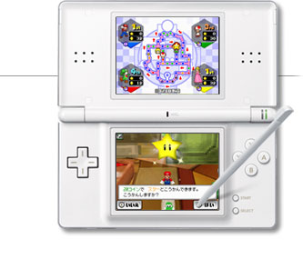

|  | ||
 |
 |
|

![プロデューサー[池田 淳さん]](img/hudson_photo1.jpg)
![シニアディレクター[菊池賢次さん]](img/hudson_photo2.jpg)
![プログラマー[西本英樹さん]](img/hudson_photo4.jpg)
![グラフィック[柴田晃宏さん]](img/hudson_photo5.jpg)
![プロデューサー[佐藤 浩]](img/nintendo_photo1.jpg)
![アソシエイトプロデューサー[山根知美]](img/nintendo_photo2.jpg)
![コーディネーション[生田良子]](img/nintendo_photo4.jpg)
| 今回はマリオたちが小さくなってストーリーが進むのですが、このアイデアはどこから出てきたのですか？ |
| 柴田： |  とくにこれといった理由はなかったんですけど（笑）、テレビに比べて画面が小さいからマリオたちも小さくなってもいいんじゃないかと。 とくにこれといった理由はなかったんですけど（笑）、テレビに比べて画面が小さいからマリオたちも小さくなってもいいんじゃないかと。マリオたちが小さくなったことで、周囲の物が大きく見えるじゃないですか。その辺の対比を描けたら従来とギャップがあって面白いと感じたんですね。 |
| 佐藤： | マリオたちが小さくなるというこのアイデアは社内にもすごく自然に受け入れられましたよ。 テレビの大きな画面で遊んでいたのがニンテンドーＤＳになって、「どうやって遊ぶんだろう？」と思っていたところに、マリオたちが小さくなったんですと説明すると納得してくれたんですね。人間の心にスッと入るアイデアだと思っています。 |
| まさにＤＳらしいアイデアですね。 |
| 菊池： | あと、ＤＳということで今回注目してほしいのがＤＳダウンロードプレイです。『マリオパーティＤＳ』のソフトが１本と人数分のニンテンドーＤＳがあれば最大４人で対戦することができます。 |
| 西本： | 現場の人間も携帯ゲーム機用ソフトを開発する経験値が少ないメンバーが多かったのでこれを実現させるためには苦労しました。１カードマルチプレイは開発当初からのコンセプトでしたので、やり通すことができて良かったです。 |
| 佐藤： | １カードでマルチプレイができるのは、これはプロデューサーとしては当然の要求です。だからハドソン側の池田さんも意見は一致するはず。『マリオパーティＤＳ』を４つも買わないと４人で遊べないというのはお客さんからしたらありえないと思うんですよね。 |
| 山根： | プログラム的には多くの問題がありましたが、なんとか実現させることができて安心しました。 |
| 対戦中COMのプレイヤーがスピーディに考えてくれますね。サクサク遊べます。 |
| 柴田： | ＤＳがバッテリーで動いているという点もあってテンポアップは心がけました。じつは開発途中では現在の２倍ぐらいの速さだったんですよ（笑）。 ただ、そのままだと対戦相手が何をしているかわからなくなってしまいそうなので少し遅くしているぐらいなんです。 |
| 西本： | プレイに慣れてくるとスピーディに遊びたくなるだろうと思って、当初はかなりテンポ良く遊べるようにしました。でも、それが初心者に対してせわしない感じに取られても困るので、その点もふまえて調整しています。 |
| 初心者の方も含めて、まずはどんな風に対戦を楽しんでもらいたいですか？ |
| 池田： |  ２対２とか、１対３とかチームに分かれてミニゲームをしますので、初心者の人も上手い人と組んで勝つとか、まあ、協力し合いながら遊んでいく過程でゲームを理解していけるのもシリーズの魅力だと思います。 ２対２とか、１対３とかチームに分かれてミニゲームをしますので、初心者の人も上手い人と組んで勝つとか、まあ、協力し合いながら遊んでいく過程でゲームを理解していけるのもシリーズの魅力だと思います。 |
| 西本： | ミニゲームがメインになっているんですけど、ボードマップに関しても初心者に優しい設計になっています。いきなり上手い人と遊ぶのは大変かもしれませんが、分岐するルートに有利不利が振り分けられているので、他の人が周らないルートを選ぶと思わぬ逆転要素があるかもしれません。 |
| 廣瀬： | わりと運を重視してバランス取りしているところもあるんです。ミニゲームが上手いからといって、必ずしも勝てない。これが意外と大切なんです。 |
| ハドソンさんと任天堂の間で対戦はされるんですか？ |
| 廣瀬： |  打ち合わせのときは対戦しますよ。もちろん勝ちたいわけですよ（笑）。 打ち合わせのときは対戦しますよ。もちろん勝ちたいわけですよ（笑）。でも開発途中は、ハドソンさんがミニゲームを作ってるわけで、相当にやりこまれていますから手ごわいです。 |
| 池田： | それは……言い訳ですか？ |
| 佐藤： | いまのは開発途中の話ですからね。いまだったら廣瀬と生田の方が強いですよ（笑）。そう言えば、罰ゲームをしたこともありましたよね？ハドソンさんにも同姓の佐藤さんがいらっしゃるんですが、僕は昔、負けた方が“ニセ佐藤”になるという条件で対戦した記憶がありますけど。 |
| 菊池： | ありましたねえ。 |
| 佐藤： | たしか僕が勝ったよね？ |
| 池田： | いや、そちらの佐藤さんが“なんちゃって佐藤さん”になったような記憶が（笑）。 |